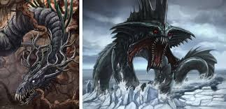
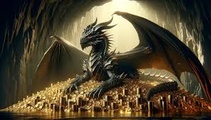
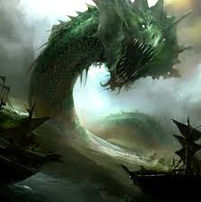

Níðhöggr es una serpiente o dragón gigante que habita en las raíces del árbol cósmico Yggdrasil, el eje del mundo en la cosmología nórdica. Rol y significado: Mordisquea las raíces del árbol, debilitándolo constantemente, representando fuerzas de destrucción, corrupción y caos en el cosmos. También se alimenta de los cadáveres de los muertos en el Naströnd (la orilla de los cadáveres), un lugar en el Helheim reservado para los traidores. Simbolismo: Níðhöggr es un símbolo del ciclo eterno de destrucción y regeneración. Aunque daña Yggdrasil, el árbol sigue resistiendo, representando la lucha entre el caos y el orden. Fáfnir
Fáfnir era originalmente un enano, hijo de Hreidmar, pero su avaricia y codicia lo llevaron a transformarse en un dragón. Historia: Fáfnir asesinó a su padre para apoderarse de un tesoro maldito, incluido el anillo Andvaranaut, que traía desgracia a quien lo poseyera. Para proteger su oro, Fáfnir se transformó en un dragón y vivió en aislamiento en Gnitaheid, custodiando su tesoro. Fue asesinado por el héroe Sigurd (o Sigfrido en versiones germanas), quien lo mató siguiendo las instrucciones del enano Regin. Después de su muerte, Sigurd se bañó en la sangre del dragón, lo que le otorgó invulnerabilidad, excepto por un punto en su hombro donde cayó una hoja de árbol. Simbolismo: Fáfnir es el arquetipo de la avaricia y cómo la obsesión con la riqueza puede deshumanizar y destruir. Jörmungandr (la Serpiente de Midgard)
Aunque técnicamente es una serpiente gigante y no un dragón en el sentido estricto, Jörmungandr a menudo se incluye en esta categoría debido a su tamaño y características. Historia: Hijo de Loki y la giganta Angrboda, Jörmungandr fue arrojado al océano por Odín, donde creció hasta rodear el mundo y morderse la cola. Es un símbolo de destrucción y caos, y su enfrentamiento final con Thor en el Ragnarök es uno de los momentos más emblemáticos de la mitología nórdica. Simbolismo: Representa el ciclo eterno y la conexión entre destrucción y renacimiento. Jormunrek (o criaturas similares a dragones)
En varias sagas heroicas, como las sagas islandesas, aparecen menciones a serpientes o dragones guardianes que custodian tesoros. Estas criaturas se presentan como desafíos para los héroes, representando pruebas de valor y fuerza. Dragones en la Cosmología Nórdica Los dragones o serpientes gigantes suelen asociarse con el caos primordial y las fuerzas destructivas que amenazan el equilibrio del mundo. Su conexión con los tesoros malditos (como en la historia de Fáfnir) refuerza la idea de que la avaricia y el deseo desmesurado llevan a la ruina. Dragones en las Sagas y la Cultura Popular
Sagas y Eddas: En el Edda poética y el Edda prosaica, las serpientes y dragones simbolizan las fuerzas incontrolables del universo, el destino y las consecuencias de la codicia. Influencia moderna: La imagen del dragón nórdico ha inspirado a escritores como J.R.R. Tolkien, cuyo dragón Smaug en El Hobbit está claramente basado en Fáfnir. Videojuegos como God of War y Skyrim también presentan criaturas inspiradas en estas leyendas. Simbolismo General de los Dragones en la Mitología Nórdica
Avaricia y corrupción:
Historias como la de Fáfnir advierten sobre los peligros del egoísmo y la codicia desenfrenada. Destrucción y regeneración: Criaturas como Níðhöggr y Jörmungandr representan el equilibrio necesario entre caos y orden, recordando que la destrucción también puede dar lugar a nuevos comienzos. Pruebas de heroísmo: Los dragones suelen ser enemigos que los héroes deben superar, simbolizando desafíos que requieren valentía y fuerza.
